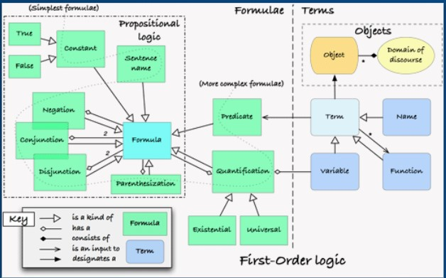
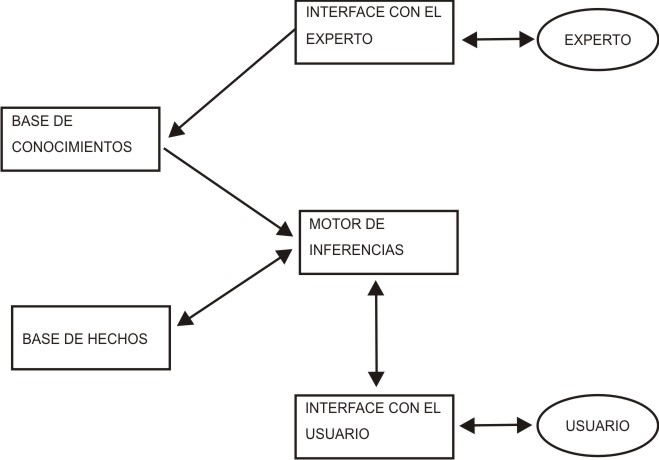
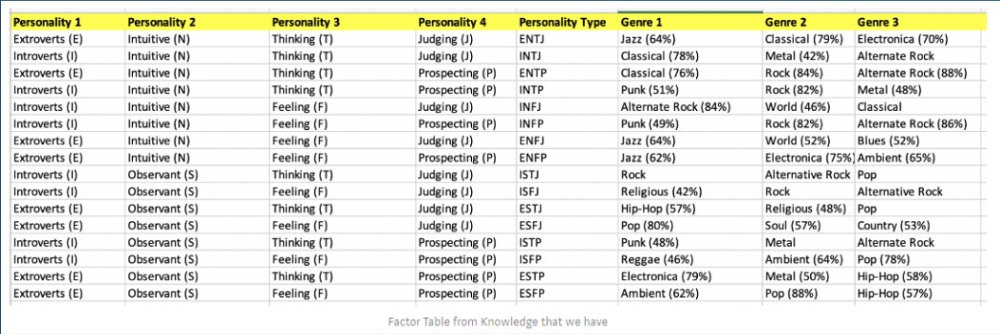
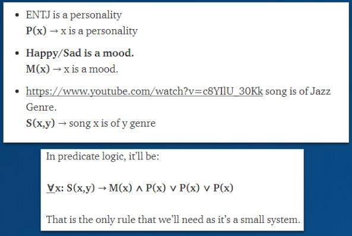
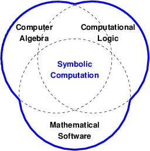

Aplicaciones
Las siguientes son aplicaciones en las que se puede emplear la programación lógica para resolver problemas.
- Inteligencia artificial
- Sistemas Expertos
- Demostración automática de problemas
- Reconocimiento de lenguaje natural
- Procesamiento de lenguaje natural
- Sistemas de administración de bases de datos relacionales
- Resolución de ecuaciones simbólicas
- Consultas lógicas basadas en reglas
- Programación Lógica Probabilística
Inteligencia artificial
La programación lógica es un método para tratar de permitir que las máquinas razonen: La lógica, en este sentido, se usa para representar el conocimiento y la inferencia se usa para manipularlo.
La siguiente imagén muestra como, por medio del uso de lógica de primel nivel, se pueden construir un sistema que aplica conceptos de machine learning usando lógica para establecer conocimiento y por último formas causales

Sistemas expertos
Los sistemas expertos se pueden entender como un subconjunto de los sistemas de toma de decisiones, donde el sistema recibe conocimiento a partir de expertos humanos, y luego un usuario no experto puede generar una consulta y recibir una respuesta o decisión como si la hubiera realizado un experto humano.

La naturaleza de este proceso, realizar una consulta sobre conocimiento establecido, es la esencia de la programación lógica, por lo que los sistemas expertos son una clara aplicación de este paradigma.
Algunos ejemplos de sistemas expertos son:- PXDES: Determina el grado de cáncer de pulmón.
- CaDeT: Identifica cáncer en primeras etapas.
- Dendral: Puede predecir la estructura molecular, basado en los datos espectrográficos de una sustancia.
- DXplain: Sugiere varias enfermedades a partir de un cuadro clínico.
Usualmente, los Sistemas expertos por medio de programación Lógica se desarrollan en ProLog, en donde uno de los conceptos fundamentales es la Tabla de Factores: ésta se define es una tabla simple que se puede hacer en, por ejemplo, en Excel y es parte de la Representación del conocimiento.
Por ejemplo, en la siguiente tabla de factores se pueden analizar tipos de personalidad (según la clasificación de Myers–Briggs) y su correlación con generos músicales preferidos para cada arquetipo.

Sobre la anterior tabla, por ejemplo, se pueden aplicar las siguientes normas de Inferencia

Demostración automática de problemas
El razonamiento automático se dedica al desarrollo de programas de ordenador que sean capaces de demostrar que una conjetura es una consecuencia lógica de un conjunto de axiomas o hipótesis.
-
El lenguaje en el que la conjetura, las hipótesis y los axiomas son escritos es una lógica, a menudo de primer orden, pero también puede ser no clásica o de orden superior.
-
Las pruebas producidas por un sistema de razonamiento automático describen cómo y porqué la conjetura es una consecuencia de los axiomas y las hipótesis,utilizando para ello las reglas de derivación.
Reconocimiento de lenguaje natural
La primera aplicación de procesamiento de lenguaje fue escrita por Alain Colmerauer (Grupo de inteligencia Artificial - Universidad de Marsella - 1973). Fue además la primera aplicación de programación lógica. Colmerauer desarrolló un formalismo gramatical que podría compilarse en Prolog, llamado "Gramáticas de metamorfosis". Las gramáticas de metamorfosis, admiten reglas que permiten reescribir símbolos(terminales y no terminales) que son términos lógicos.
Procesamiento de lenguaje natural
La aplicación de procesamiento del lenguaje natural más explorada ha sido el análisis de oraciones individuales, para proporcionar interfaces de lenguaje natural a los sistemas basados en el conocimiento (motor de inferencia). Dada una gramática y una supuesta oración (reglas de derivación) en el lenguaje definido por la misma, el el problema de análisis es obtener algunas estructuras representativas. El principal problema del análisis sintáctico es cómo describir las infinitas oraciones posibles de un lenguaje a través de un dispositivo finito, como una gramática, en forma concisa y regular de manera posible.

Sistemas de administración de bases de datos relacionales
Sistemas lógicos, como Prolog, se basan en una evaluación orientada a tuplas que utiliza la unificación para unir variables con valores atómicos (tupla). Por otra parte, el modelo relacional utiliza un mecanismo de evaluación orientado a conjuntos. Se busca una arquitectura que conecta los dos sistemas, para permitir consultas de alto nivel y que sean eficientes.
Los elementos claves son:
- Con el acoplamiento de una implementación de un sistema lógico existente a un sistema de gestión de base de datos relacional existente.
- Extender un sistema lógico existente con algunas funcionalidades de gestión de bases de datos relacionales.
- Extender un sistema lógico existente con algunas funcionalidades de gestión de bases de datos relacionales.
- Integrando estrechamente las técnicas de programación lógica con la de sistemas de gestión de bases de datos relacionales.
Resolución de ecuaciones simbólicas
A travez de la programación simbolica se pueden desarrollar procesos complejos que pueden construir procesos aun mas complicados por medio de la combinacion de unidades (ecuaciones) logicas o funcionales mas pequeñas, así estos programas pueden modificarse asi mismos y aparentar que "aprenden", lo que los hace apropiados para aplicaciones a la inteligencia artificial, sistemas expertos, procesamiento de lenguaje natural y juegos de computadora. La computacion logica es componente fundamental de la computación simbolica.

Consultas lógicas basadas en reglas
- Búsquedas en bases de datos.
- Sistemas de control de voz.
Programación Lógica Probabilística
La programación probabilística es un paradigma de programación en el que se especifican modelos probabilísticos y en el cual la inferencia se realiza automáticamente a partir de dichos modelos . Además, se ha utilizado como un subcampo de la inteligencia artificial, el cual incluye estructuras a los lenguajes de programación tradicionales para trabajar con inferencia probabilística y aprendizaje. La programación lógica permite aprovechar las ventajas de la programación declarativa. Además, ha mostrado utilidad en diferentes áreas de aplicación gracias a su forma particular de ejecutar la lógica en sus cláusulas. Sin embargo, la programación lógica tiene ciertas limitaciones al abordar situaciones del mundo real en las que se ven involucrados factores probabilísticos. La manera de tratar la incertidumbre en la programación lógica es mediante la adición a esta del concepto de probabilidad, generando, en este caso, la programación lógica probabilística. Con la programación lógica probabilística se seguirá el mismo funcionamiento que en la programación lógica, pero teniendo en cuenta que los hechos presentados no tienen por qué ocurrir siempre tal como ocurren en la vida real.
-
Problog es un lenguaje de programación probabilístico que se basa en Prolog. Desde una perspectiva de modelado, se puede considerar que un programa de Problog está compuesto por dos partes: una parte probabilística que define una distribución de probabilidad sobre los valores de verdad, y una parte lógica que deriva los valores de verdad utilizando mecanismos de razonamiento como en Prolog.
Ejemplo en Problog: El siguiente programa modela un pequeño grupo social, donde el tabaquismo de las personas es influenciado por sus amigos, e indirectamente por los amigos de los amigos.
0.4::asthma(X) :- smokes(X).
0.3::smokes(X).
0.2::smokes(X) :- friend(X,Y), smokes(Y).
friend(1,2). friend(2,1). friend(2,4). friend(3,2). friend(4,2).
La principal tarea de inferencia abordada en ProbLog es la de calcular la probabilidad de que una consulta tenga éxito, por ejemplo
?- asthma(2)tiene éxito con una probabilidad de 0,15. Si añadimosasthma(3)como evidencia, la probabilidad condicional de?- asthma(2)es de 0,19.Problog2 es el sucesor de Problog, y es uno de los lenguajes lógicos probabilísticos más modernos. Este lenguaje, además, presenta grandes aplicaciones en el ámbito de la inteligencia artificial; incluso permite modelar y obtener respuestas rápidamente pues cuenta con la capacidad de tratar conjuntos de datos muy grandes.